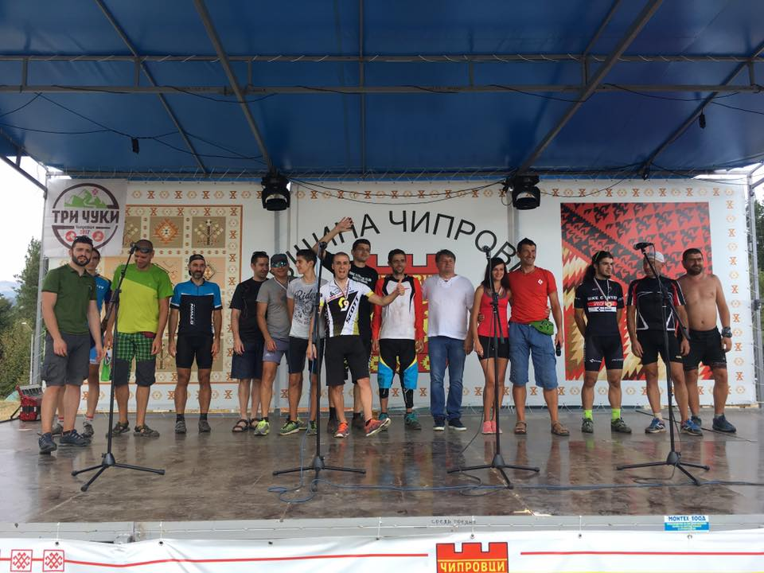
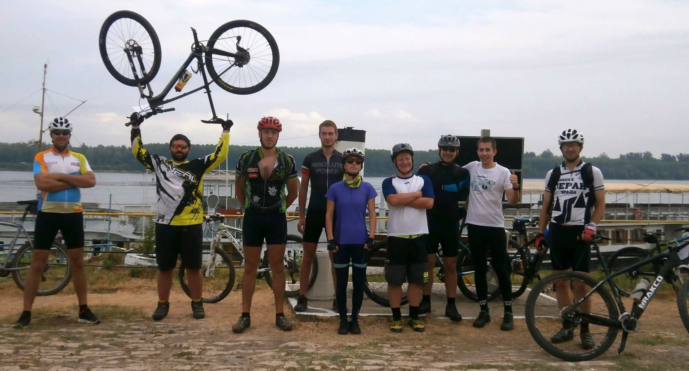

Mountain bike and trail running event "Three Peaks"
 The event takes place the first week of August, during the tradition celebrations of the Balkan in Chiptovtsi, a picturesque village in the skirts of the mighty Three Peaks ('Tri chuki'). Learn more about the event on its Facebook page.Trail running "Borovitza Run"

Spectacular race that takes place among the majestic rocks of Belogradchik. Runners can choose between distances of 15km, 30km and 50km. Learn more about the event on its Facebook page.
Kozlodui-Okolchica with a bike for one day
Feel like one of Hristo Botev`s brave rebels, but... on a bike. The event is part of the annual Memorial days of Botev. It starts at the Museum Ship Radetsky, on the Danube shore and ends on the mount Okolchica. Learn more about the event on its Facebook page.